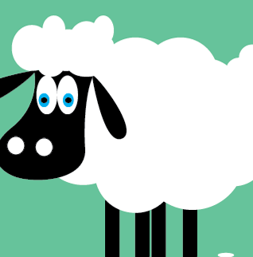

About
StartCloning is a non-profit organization dedicated to cloning.
A non-profit organization started by two students from Humberside Collegiate Institute.
Kendall Corcoran and Emily Lam have set out to educate the public about cloning.
From the Science Behind Cloning to the benefits & controversies.
Kendall Corcoran and Emily Lam have set out to educate the public about cloning.
From the Science Behind Cloning to the benefits & controversies.
Information
StartCloning
Timeline
StartCloning
-
1885
First Demonstration of Artificial Embryo Twinning
Scientist, Hans Adolf Edward Dreisch, discovered that it was possible to separate cells using a sea urchin. He shook two-celled sea urchin embryos in order to separate their cells which made the individual cells grow into two separate sea urchins. This proved that there is a separate genetic make-up for the embryos in each cell which can grow into its own individual organism.
-

1952
First Successful Nuclear Transfer
Scientists Robert Briggs and Thomas King made a tadpole by transferring the nucleus of a tadpole embryo into a frog egg with the nucleus removed. Not many tadpole clones survived and the ones that did grew abnormally because cloning has less success when the nuclei is transferred from a more advanced embryo Nevertheless, this experiment proved that nuclear transfer is a possible method of cloning, and that the nucleus controls cell growth and development.
-

1996
Dolly The Sheep Is Created
Scientists Ian Wilnut and Keith Campbell transferred nuclei from a cultured sheep cells grown in the laboratory into sheep egg cells without a nuclei (rather than the nuclei from early embryos) to produce lambs. They cloned a lamb from an adult sheep's somatic cell by transferring its nucleus into an egg with no nucleus. They named this lamb Dolly, whom was famous for being the first embryo carried to term by a surrogate mother, this further advanced stem cell research.
-
1997
First Primate Cloned
Scientists Li Meng, John Ely, Richard Stouffer, and Don Wolf created the first primate by fusing early embryos with monkey egg cells which lacked nuclei. Next, they implanted the new embryos into surrogate mothers, which produced two monkeys, Neti and Ditto. This experiment showed scientists that monkeys can be cloned which are very similar to humans therefore, it is likely we would be able to clone humans if given the chance.
-
2007
Primate Embryonic Stem Cells Created by SCNT
Scientist Shoukhrat Mitalipov and his colleagues fused an adult monkey cell with an egg cell without a nucleus, its embryonic stem cells can seperate to make any kind of cell. This proved that nuclear transfer in primates was possible and started the idea for human therapeutic cloning which can treat disease, this was a huge medical advancement.
-
2013
Human Embryonic Stem Cells Created by SCNT
Scientist Shoukhrat Mitalipov and his colleagues produced a human embryo. The process they used is called somatic cell nuclear transfer and can be used to make embryonic stem cells. The stem cells made were specific to the patient they derived from.
More
To
Come!
Our Amazing Team
StartCloning
Emily Lam
Lead Designer
Kendall Corcoran
Lead Marketer
Rony Masri
Biology Expert
Kendall And Emily have dedicated countless hours to the production of StartCloning.
They have researched the topic of cloning with a great deal of care.
Alongside their teacher and biology expert,
Mr. Masri, who has provided constant support and a great deal of background information.
This website was made using HTML and CSS in Notepad++ and Sublime Text.
StartCloning will bring you all the information that you need to know about cloning.